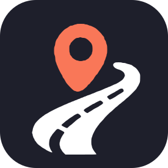

VROOMYSignale uniquement à l'arrêt ou en tant que passager. Les contrôles de police et les radars ne peuvent pas être signalés (interdit en France). Les fausses alertes entraînent la suspension du compte.
⚠️ Modèle de départ : à faire relire par un juriste avant tout lancement public. Remplace les [crochets] par tes informations.
Éditeur : [Vroomy Corp], [adresse], [vroomy.contact@gmail.com], [SIRET si professionnel]. Directeur de la publication : [Aubagnac Clément]. Hébergeur : [cloudflare, 6 Place de la Madeleine 75008 Paris, 01 73 01 52 44].
Dernière mise à jour : [date]
Un site ou une application comme celle-ci ne peut pas bloquer les notifications des autres applications : seul ton téléphone peut le faire. La bonne solution est le mode « Conduite » ou « Ne pas déranger » : il coupe les réseaux sociaux et laisse passer les appels et messages importants.
Pense à activer le mode Conduite ou Ne pas déranger de ton téléphone pour couper les notifications des réseaux sociaux.
Vroomy propose des itinéraires qui évitent autoroutes et voies rapides pour les voitures sans permis et les scooters.
L'itinéraire est une aide, pas une garantie : respecte toujours la signalisation et le code de la route.
Cartes © OpenStreetMap contributors · OpenFreeMap. Adresses : Base Adresse Nationale. Calcul : Valhalla (FOSSGIS).